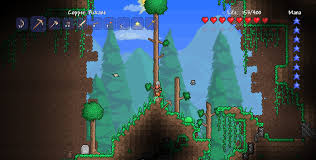

Terraria is a 2D action-adventure sandbox game. It was Released in 2011 and is one of the top seller, selling 58.7 million copies as of 2024.
It is avalble on PC and console. It was developed by Re-Logic.
The gameplay is comprised of mining, crafting, and fighting. Each part is as fun as the last and the porgreshon is intuative and fun!
image by Flickr